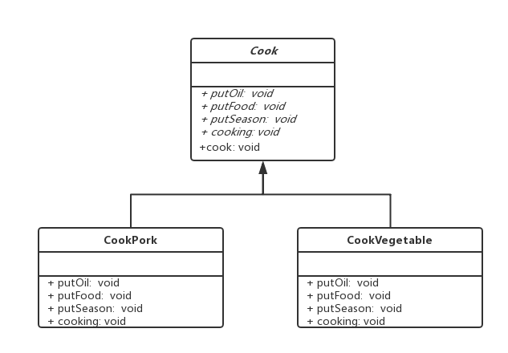

模板（Template）模式，经常用来作为一个业务逻辑的骨架，在父类定义执行流程，具体到每个方法，将实现细节延申到之类中。模板模式不允许子类改变执行流程（step1、step2、step3由父类定义），流程中的每一步骤可以由子类重写。
类图
以演示的烹饪类及其子类为例

实例
模板模式涉及到两个角色：
- 抽象模板：定义一个或多个抽象操作以及由这些操作组合而成的流程方法；
- 具体模板：继承抽象模板并实现它定义的抽象方法，抽象模板可以有多个具体模板，每个具体模板对抽象方法有不同的实现。
以烹饪为例，抽象模板定义烹饪的流程
1 | //烹饪抽象类 |
1 | //红烧肉 |
1 | //爆炒青菜 |
测试类
1 | public class TemplateTest { |
输出结果
1 | 放入猪油 |
使用场景
父类定义规范和流程，子类实现每个步骤的具体流程，如JDBC的规范：开启事务、获取Session、提交事务、关闭Session，回滚等，这些步骤由不同ORM框架厂商实现并遵守，如Hibernate、Mybatis，开发人员不需要重复写这些代码，只要关注具体的CURD操作。再比如J2EE的servlet规范，定义了一套init/doGet/doPost/service……方法，这些方法不是抽象的，在servlet有默认的实现，但是它允许开发者重写这些方法，整体的调用流程还是由servlet控制，大大提高可扩展性，SpringMVC就是基于servlet的模板方法扩展；
总结
模板模式的优点：
- 封装性好，在父类定义规范和不可变的流程，子类实现细节；
- 扩展性好，由子类实现方法扩展和修改，符合开闭原则；
- 提高代码复用；
缺点：
- 通过继承方式，导致每个不同的逻辑都必须要一个子类来实现，假如只有step3不同，其他步骤完全一致，也要两个类来分别实现，随着实现逻辑的增多，类会越来越庞大；
- 子类的逻辑会影响流程的执行结果，在代码阅读上增加了难度；